Face Morphing
In this project, I implemented face morphing between various people's faces. I also extrapolated the average face of a population, seeing what I would look like as that population, and seeing what that average face of a population would look as me.
Defining Correspondences and Triangulation
I was able to choose correspondences using the matplotlib.pyplot ginput function. I chose to define 47 correspondence points including the 4 corners of a picture. I chose the points suggested in the project post in order to reflect accurate face features. After establishing these correspondences, I ran the Delaunay triangulation algorithm on the selected points with the scipy library. I show below the result on my face.
Original photo of Richard (that's me)
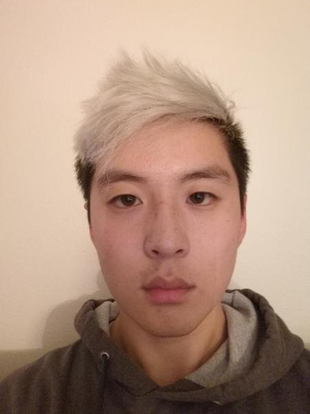Delaunay Triangle on Richard (that's me)
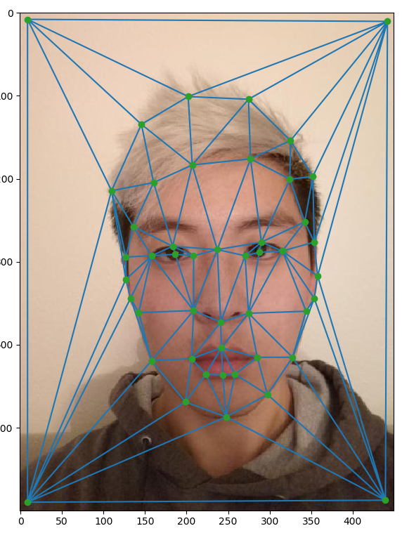I also defined correspondences on my brother's face and performed triangulation on him as well.
Original photo of David
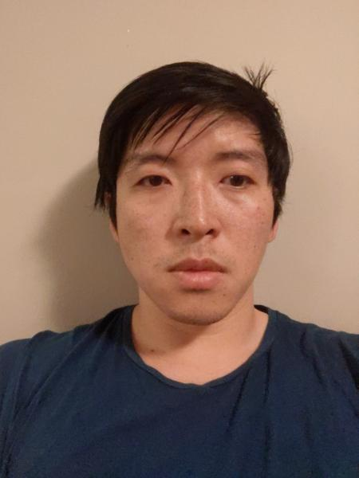Delaunay Triangle on David

Computing the Mid-Way Face
Here I calculate the mid way face at any given frame. I do this triangle by triangle. I first find the average shape of the new triangle by taking a weighted sum of the points in one face and the points in the second face. Then I find the affine transformation matrix for both by using the equation TA=B, where we transition from face A to face B. We can find the transformation matrix T by multiplying both sides by inv(A). To make sure these are invertible, I pad the matrices with 1s in order to make them square. We then take the corresponding pixels from one face, and the corresponding pixels from the second face to make a midway face.
Original photo of Richard
Midway photo
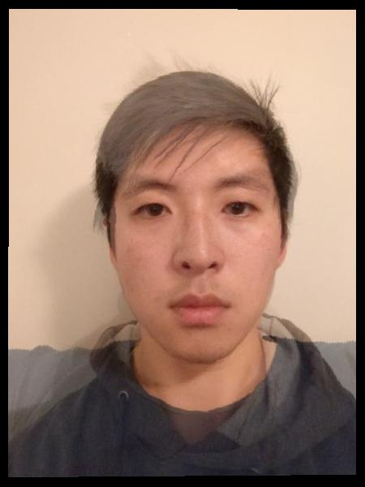Final photo of David
The Morph Sequence
The following is a morph sequence of my face to my brother's face hosted on imgur :The mean face of a population
I downloaded the danish scientists data set provided in the project page. I then chose 40 images of both men and women and chose images of them not smiling and facing the camera. I used a script provided on Piazza by a follow student in order to parse through the .asf file to get the face correspondence points. I was then able to find the average shape of all of them, morph invidual people into this average shape, and use that to find the average face of a danish computer scientist. I was then able to visualize what I would look like as an average Dane, and what an average Dane would look like as me. Below are the results.
Average Danish person
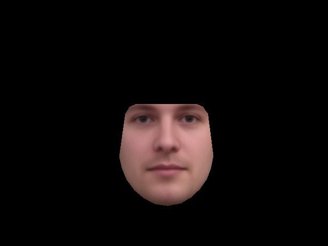Original Dane

Dame shifted to the average shape
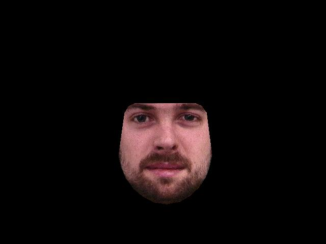Richard as a Dane
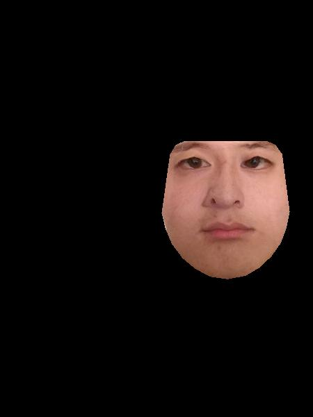Average Dane as Richard
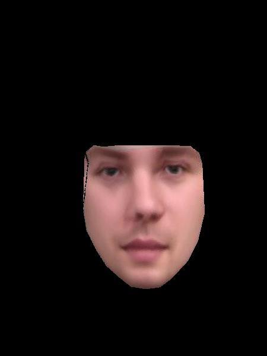The average Dane looks pretty good, very dashing! Only the face is present because thats' where all of the correspondents points lied, which cut off the other parts of the image. The shifts between me and a Dane are not great because it's possible the correspondent points picked are not amazing, as I had to hand draw them according to some annotated notes which may or may not be super accurate.
Caricatures: Extrapolating from the mean
I was then able to form some caricatures of my face and morph it into an even more exagerrated way of the average Dane. This is done by finding the difference in correspondence points between my face and the average dane, and then adding that difference back to the average shape of a Dane. This amplifies the affects. Below are some not very handsome results.
Caricature 1.1*average
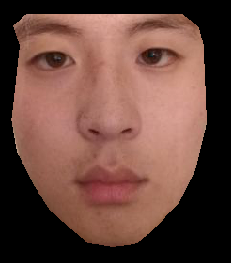Caricature 1.3*average
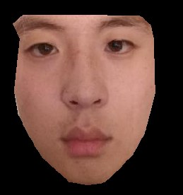Caricature 1.7*average
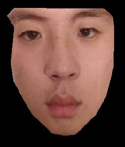Caricature 2*average
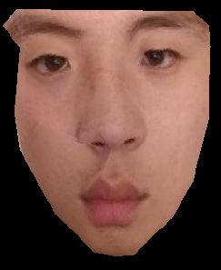Bells and Whistles
I made a music video of face morphs between me and my friends!! Please consider subscribing to my channel I'm trying to hit 100 subscribers.
Reflections
I personally find this project more challenging than the others because I felt there was less guidance on the slides. I had a lot of trouble figuring out how exactly to map from one basis to the other, but I walked away with a lot better understanding of it now. The reuslts were also really fun to look at!